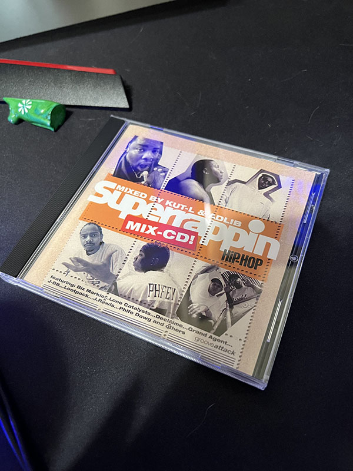
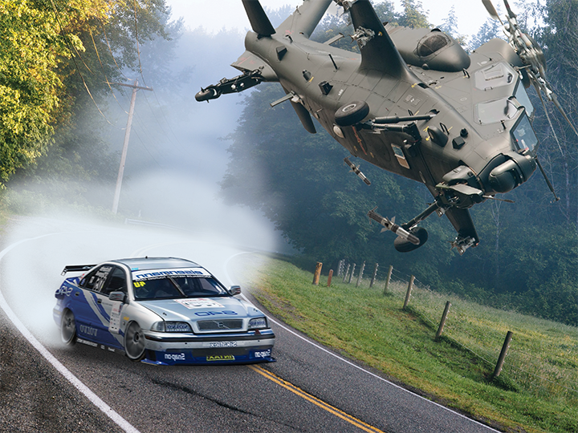

It's been a moment since I've posted on here. I just kinda lost the idea of writing stuff into here for a while. Not that I got over-worked / forgetten about it, I just don't got much to talk about, so apologizes for that.
I've been collecting a lot more CDs recently, my most recent pickup was Superrappin Mix-CD. I've got a much of other underground stuff to that I might show off on the secondary YouTube channel soon. I'm really greatful to find this type of music because there's some really good stuff in these Superrappin albums, definely worth listening to if you're a fan of underground Hip-Hop.
I've also been working on some cool stuff for my graphic design class. This week we've been just making whatever the hell we wanted to. So I made this...
Yeah, it's just something that came out of head. It ain't finished yet either if you couldn't tell. We were told to give a "story" behind it so here's what I wrote.
Alright so, it's in the middle of the world's most important racing tournaments of all time, when suddenly, an attack helicopter appears out of nowhere! "Oh shit!", says the driver in a blue and silver race car. As the driver tries to speed up, the helicopter gets closer and closer to the driver. Sounds of shots from the minigun of the attack helicopter are heard. And sounds of the concrete road are heard. They're after the driver in first! For what? Who knows. All we know is that many more people are turning in to see what happens next
I would write up something better than that, but this isn't English class, so I could care less.
Sometime in the future, I'm going to create a "legacy" sub-website for older computers and such when I get to in the future. ANd hopefully it'll be made on a computer that can see how it looks.
That's all I got for now, thanks for sticking around.